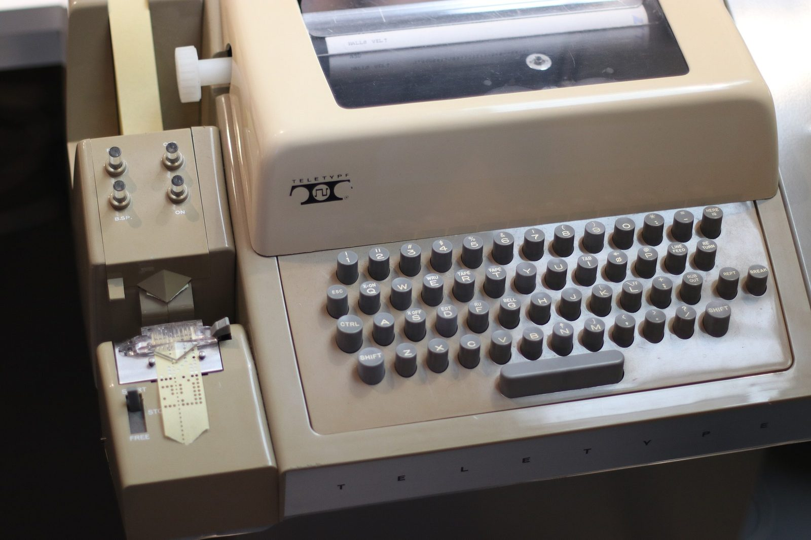
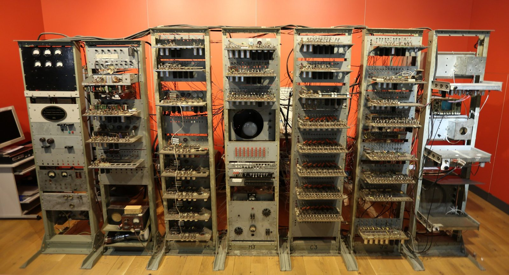

Unit 1 · Lesson 1
Can machines think?
You have seen a film about Alan Turing. Now his question is yours: can a machine think?
The story
In 1950 Alan Turing wrote a paper called 'Computing Machinery and Intelligence'. Its first sentence is: "I propose to consider the question, 'Can machines think?'"
The word 'think' is hard to define, so Turing changed the question into a game. He called it the imitation game. A judge sits in another room and types questions. Two players answer: one is a person, one is a machine. The judge only sees the typed answers.


If the judge cannot tell which player is the machine, Turing asked, should we say that the machine thinks? In 1950 there were only a few computers in the world, for example in Manchester, where Turing worked. He guessed that in about fifty years machines would fool many judges for five minutes.


Turing did not build a thinking machine. He asked a question and proposed a test. Today the question is not imaginary any more: you can type to a chatbot on your phone.
Inside your computer today: the same game. When you type a question to a chatbot, your words go in, a program works on them, an answer comes out, and the conversation is saved. Is that thinking? That is the question of this unit. We vote now, and we vote again in chapter 9.
The science
What is a computer? Four things
A computer is a machine that takes in data, works on it by following a program, and gives out a result. Every computer does four things. Input: data comes in (a key press, a photo from the camera, your voice). Process: the chip follows a program (a list of instructions) and works on the data. Output: the result goes out to the world (the screen, a sound, a printed page). Storage: the result is saved to use later (a file). Example, the phone camera: light comes in, the chip works, the photo appears on the screen, the photo is saved.
- Input
- Process
- Output
- Storage
A computer follows instructions
A program is a list of precise instructions. The computer follows them exactly, billions of times a second. It does not know what they mean. Think of a kitchen: the ingredients come in (input), the cook follows the recipe (process), the dish goes out (output), and the leftovers go into the pantry (storage). In a computer, the cook is the processor and the recipe is the program.
- The cook = CPU core
- The metronome = clock (GHz)
- The countertop = cache
- The workbench = RAM
- The pantry = storage (SSD / HDD)
Is following instructions the same as thinking?
Some people say no: the machine only follows its program, so it understands nothing. Other people say: if its answers are as good as a person's, why not call it thinking? Turing's game tests behaviour (what the machine does), not what happens inside. There is no single right answer. A good argument uses what a computer does: it follows a program.
Check now
Quick questions. You see the answer at once.
You take a photo with your phone. Which part is the INPUT?
- the photo saved in the gallery
- the light that enters the camera
- the photo on the screen
A file saved on your phone is OUTPUT.
True or false?
In Turing's imitation game, how does the judge decide?
- by looking at the players
- only from the typed answers
- by opening the machine
Try it
Play Turing's game. Read each answer and guess: was it written by a person or by a chatbot? Then read the clue.
Paper version
Play Turing's game on paper. For each question, read the answer and write PERSON or CHATBOT, with one reason. Example: question "Add 34957 to 70764." Answer: "(after a pause of about 30 seconds) 105621". This is the answer Turing imagined in 1950: slow, and wrong (the right sum is 105721). Clues that often give a chatbot away: it never says 'I don't know', it is very polite, it explains everything step by step, it is long and perfect.
Your turn
Exercises
From ★☆☆ (easy) to ★★★ (hard). Use a hint if you are stuck.
-
Exercise 1 ★☆☆
You ask a chatbot a question. Match each part to input, process, output or storage.
- you type your question — ?
- the program works on your words — ?
- the answer appears on the screen — ?
- the conversation is kept for later — ?
-
Exercise 2 ★☆☆
Put the steps of taking a photo in order.
- Light enters the camera.
- The chip follows its program and makes the picture.
- The photo appears on the screen.
- The photo is saved in the gallery.
-
Exercise 3 ★☆☆
In 1950 Turing built a machine that could think.
True or false?
-
Exercise 4 ★★☆
A washing machine is a computer too. Which is its OUTPUT?
- the buttons you press
- the program that decides how long to spin
- the drum turning and the beep at the end
-
Exercise 5 ★★☆
In his 1950 paper, Turing imagines a machine that answers "Add 34957 to 70764" with 105621. What is the right answer?
-
Exercise 6 ★★☆
Which clue most often gives a chatbot away in the imitation game?
- it makes spelling mistakes
- its answers are long, polite and perfect, and it never says 'I don't know'
- it answers in one word
-
Exercise 7 ★★☆
Name one object at home that is a computer but does not look like one. Write its input, process, output and storage.
-
Exercise 8 ★★★
Write one argument FOR and one argument AGAINST: 'A chatbot that fools a judge can think.'
In one sentence
A computer follows instructions very fast; whether that is thinking is our question.
Words of the chapter
- computer
- a machine that takes in data, follows a program and gives out a result computer
- input · process · output · storage
- in, work, out, keep: the four things every computer does ingresso · elaborazione · uscita · memorizzazione
- program
- a list of precise instructions a machine follows programma
- imitation game (Turing test)
- can a machine pass as a person in a typed conversation? gioco dell'imitazione (test di Turing)
- judge
- the person who asks the questions and decides giudice
- chatbot
- a program that writes answers to your messages chatbot